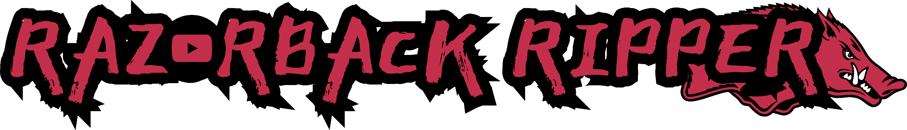

I don't know of any site that can do this!
I coded my own little YouTube to MP4 (video file) app with Python! Click below and you can
have
unlimited free MP4s just by pasting in the YouTube URL. Burn DVDs, whatever you want.
I don't even think there is a length limit.
The files will show up in your Videos folder.
1. Click the "follow that pig" button.
2. If your computer says it's an untrusted file,
it's because I'm not a trusted publisher or something. Just click allow or what ever.
3. Open your downloads folder.
4. Right-click and extract zip file and click extract.
5. If it gives you trouble again, just click trust file of whatever.
6. Go back to your downloads. You should see a folder (not the zip) called razorback_ripper.
7. Click into that, and there's the program! Click and drag onto your desktop.
8. Double-click the program. Give it a few seconds to load.
9. The program is a little pop-up. You just paste your youtube URL into it.
10. The music file will appear in your Videos folder. If you don't see it, check the Videos
folder
in OneDrive and the local Videos folder as well.